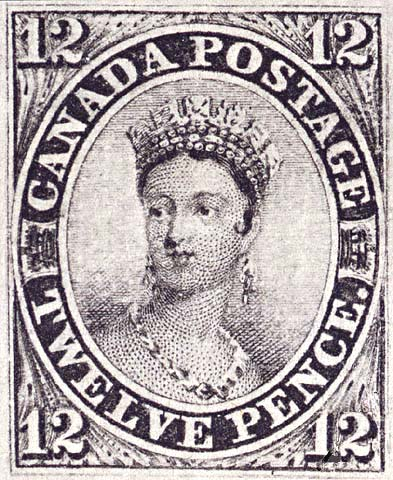
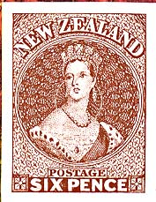
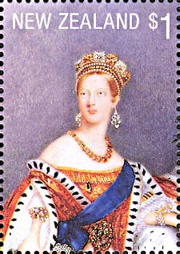
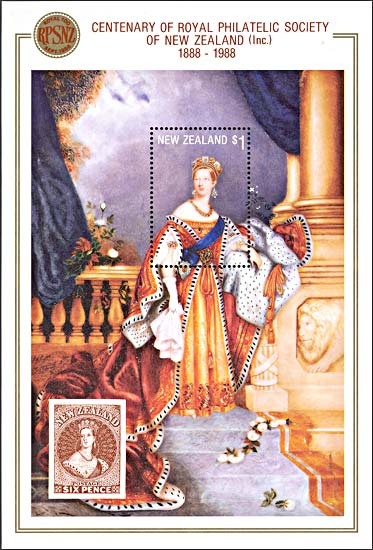
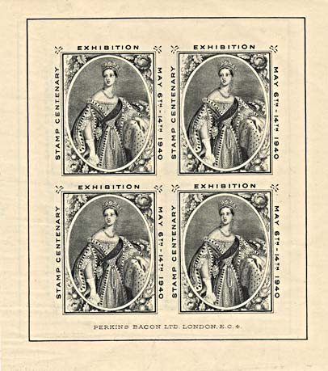
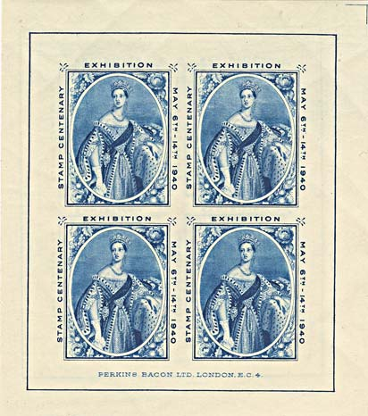
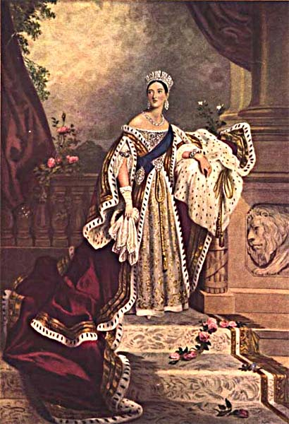

| Published:
11/13/05. Revised:
11/13/05. Copyright © 2005 by Victor Manta, Switzerland. All rights reserved worldwide. |
|
The First Art Stamp
The first definitive stamp showing portrait of a
monarch based on a painting was issued by the Postal Administration of
Canada. The Queen Victoria stamp with a denomination of 12d (see below) was
released on 14 June 1851. The stamp is based on a painting by Alfred Edward
Chalon. The portrait was engraved by Alfred Jones after the original
artwork: Alfred Edward Chalon, "Queen Victoria", 1837. Scott No. 3.
After: Blair Stannard, Canada, on RCSD (thanks, Blair!).

Chalon was the son of a Huguenot
refugee from Geneva who settled in London, in the area of Kensington, and
the younger brother of John James Chalon (1778-1854). The brothers, both
unmarried, lived in Kensington for the rest of their lives. Alfred entered
the Royal Academy schools in 1797. He became a member of the Associated
Artists in 1807, resigning the following year to found the Sketching Society
with his brother. He exhibited at the Royal Academy from 1810 and was
elected an associate of the Academy in 1812 and a full Academician in 1816.
Alfred is the better known of the two brothers and enjoyed
the greater success during his lifetime—in fact he was one of the most
fashionable watercolor portraitists of his time. His graceful portraits,
usually about fifteen inches high, typify early Victorian art. His portrait
of the young Queen Victoria was reproduced on many early Colonial stamps,
and he was appointed Painter in Water Colours to the Queen. He also painted
historical and literary subjects, as well of caricatures.
http://www.britishwatercolors.com/catalog.php?name=Chalon,%20Alfred%20E.&category_name=19th%20Century&request=complete
|
 |
 |
The above stamps are parts of the miniature sheet Scott 889, issued by the New Zealand postal administration on 13 January 1988. The stamp on the left reproduces the NZ stamp Scott No. 8, issued in 1859. A stamp in a same design was issued in 1855, 1p dull carmine, Scott No. 1.

The miniature sheet Scott 889 was issued by the New Zealand postal administration on 13 January 1988. It commemorates the centenary of the Royal Philatelic Society of New Zealand.

Two fascinating souvenirs were made available to commemorate the 150th anniversary of the first adhesive postal stamps, GB, 1840. For the centenary in 1940 of the first stamp worldwide an exhibition was planned which needed to be aborted as a result of WWII. Two souvenir sheets, each comprising a block of four labels with the Chalon portrait of Queen Victoria, were printed in recess, one in black and the other in blue, by Perkins Bacon and Co. Ltd.

It was believed that most of these sheets of labels had been overprinted, but a supply of the original, unoverprinted sheets was discovered. One of each was inserted in the copy of the Stamps London 90 Souvenir Handbook.

The original painting is shown above.
Helmut and Alison Gernsheim, in their book "The History of Photography,
1685-1914" (New York, St. Louis and San Francisco: McGraw-Hill Book Company,
1969), p. 118 relate: "In the early days of daguerrotype portraiture, Queen
Victoria asked the fashionable miniature painter Alfred Chalon whether he were
not afraid that photography would ruin his profession, 'Ah, non, Madame', he
replied in a mixture of French and English, 'photographie can't flatère'."
Originally published in "The Women at Home", London,vol. VIII, 1897, p. 812.
http://aic.stanford.edu/jaic/articles/jaic24-02-004_appx.html
Link: London 90 Exhibition, found on this site.
| Published:
11/13/05. Revised:
11/13/05. Copyright © 2005 by Victor Manta, Switzerland. All rights reserved worldwide. |
|